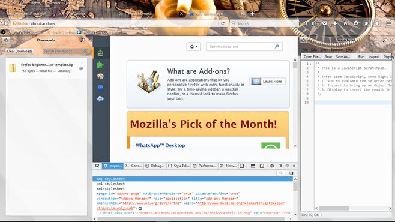
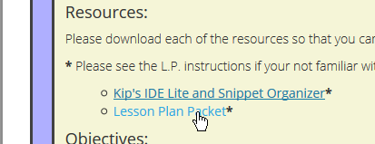
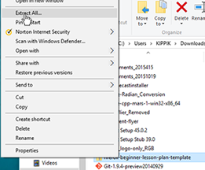
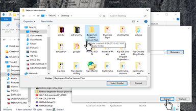
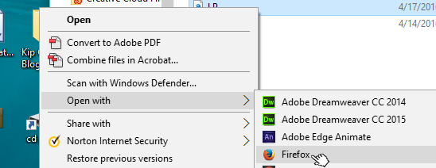

Services hosted by,

Mozilla Omaha Links
Moz Omaha Blog | Applications | Library | Forum | EventsWelcome
This is Mozilla Omaha's portal to our learning forums, but it's more than that, it's also a place to meet and talk about your hobbies, goals, and inspirations.
At Mozilla Omaha we hold Maker Parties at libraries, provide offline web apps, get involved with collaborative science and engineering, and much more.
Services
Mozilla Omaha provides the following services free of charge:
- monthly events,
- an online library,
- and an online forum,
- and much more.
Firefox Hacks Omaha
The "Learning Firefox: Beginners" module teaches you alot so be prepared to learn the web! Below is a screenshot of the Firefox browser.
Firefox hacks screen shot. Turn Firefox into a development environment.
All services are provided free of charge and ran by volunteers. If your interested in becoming a Mozilla Omaha Volunteer contact Mozilla Omaha via our Facebook page.
About Mozilla Omaha
Mozilla Omaha was started up by Kip Omaha in 2016 to teach web literacy through collaboration. Mozilla Omaha's goals are the same as the Mozilla Foundations, but we direct our efforts to accomplish specific tasks that help Mozilla's bigger picture out. Read on to find out how Mozilla Omaha helps!
Mozilla Omaha Manifesto
Mozilla Omaha is a small group within the larger network of Mozillians, but nonetheless we pledge to pursue the principles of the Mozilla Foundation. Through our decisions, activities, participation, and contributions we will lead, follow, and build a future for the internet that can be shared by all. We will safegaurd your rights and produce high quality open source resources so that you and others may enjoy, "The web of things"!
Kip Omaha chooses Mozilla
Kip Omaha is a small company that promotes open science and engineering, so for us taking the dive into creating a Mozilla Club of our own in our local area was a quick and simple decision to make. By taking this action we hope to create a community of people in our area that understands how the web can be leveraged as a tool to connect not only on social terms but as a means for entrepunuership, sience, and engineering collaboration.
Mozilla Omaha 2016
Mozilla Omaha has many plans for 2016, but the center piece that they all revolve around is the pursuit to create an online forum for open science and engineering. Our goal is to get people involved in the science and engineering that makes an impact on their everyday lives by teaching people how to become participants and collaborators using the web.
Mozilla Omaha's Future
Mozilla Omaha's future is set by the club members in our local community so that our future goals may change. In 2016 we are taking on the challenge of open science and engineering on the web, but as we progress and increase our membership our goals may change and multiply.
Lesson Plans
Welcome to our lesson plan resources. We are glad you found us and hope you'll help make this the best resource for learning that it can possibly be.
To see a list of all our lesson plans visit our library. If your looking for faqs about a module or about contributing you'll find information about making contributions and other topics at the module's lesson plan page that is downloaded with the lesson plan packet.
Learning Firefox
The "Learning Firefox" lesson plan has three different skill levels: beginner, intermediate, and advanced. Each level is supposed to challenge the learner to gain knowledge that sets the person in a direction that is suitable for his or her own goals. The thought behind this method is to teach them that Firefox is a multifaceted tool that can be used in creative ways to accomplish their personal goals.
-
TBD.
Occurs: Weekly8:30 P.M.
Lasts: 60 min.Beginner: Learning Firefox
We take you through the basics of Firefox, by the end of the class you'll have your own reference sheet to help you use Firefox.
Resources:
Please download each of the resources so that you can complete each activity.
* Please see the L.P. instructions if your not familiar with downloading zip files.
Objectives:
By the end of the class you should have a clear understanding of the Firefox browser and its role in your professional and social life. You will complete activities to help increase your knowledge so that you can apply what you learn to helping you accomplish your goals. You should be able to do the following by the completion of the beginners Firefox module.
- Install Firefox
- Tell others about the features of Firefox
- Be able to customize Firefox
- Be able to download and run an HTML Application
L.P. Instructions:
Downlaod the resources that are necassary to complete this pacakge. Once you have the zip files downloaded follow the instruction to unpack the contents of the firefox-beginner-lesson-plan.zip file.
-
L.P. zip file instructions
-
Right click the firefox-beginner-lesson-plan-template zip file that you downloaded earlier by clicking the lesson plan packet link. You should click the "Lesson Plan Packet" link if you haven't already done so.

Check the open or save file input, than continue on to the next step.
Once you have found the downloaded zip file, right click it and look for the option to extract all and click it. If you have a prefered extraction tool that you use feel free to use it just remember the location where you unpacked it to. I will choose to download the zip file to my downloads folder, than extract the files to a folder named "Beginners Firefox Lesson Plan" that's on my desktop.

A dialog window should appear with your options if you choose to use extract all. Click the browse button and navigate to the folder you want to extract to.

After you have confirmed your download open the folder containing the contents from the zip file and right click the LP.html file and choose to open it With the Firefox browser. Alternatively you can just drag the icon over the Firefox icon and release it and it will open up too. If all goes well you should be able to see the actual detailed lesson plan, and you can start using the Beginner's Learning Firefox module.

-
TBA
Intermediate: Learning Firefox
This module is still being developed. If you'd like to make a contribution, please sign up for a Mozilla Webmaker Account or email kipOmaha@gmail.com.
-
TBA
Advanced: Learning Firefox
This module is still being developed. If you'd like to make a contribution, please sign up for a Mozilla Webmaker Account or email kipOmaha@gmail.com.